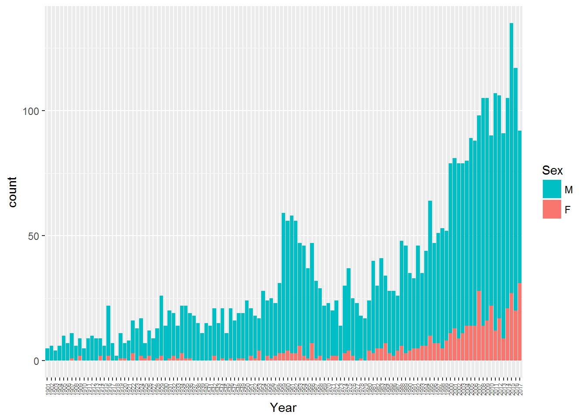
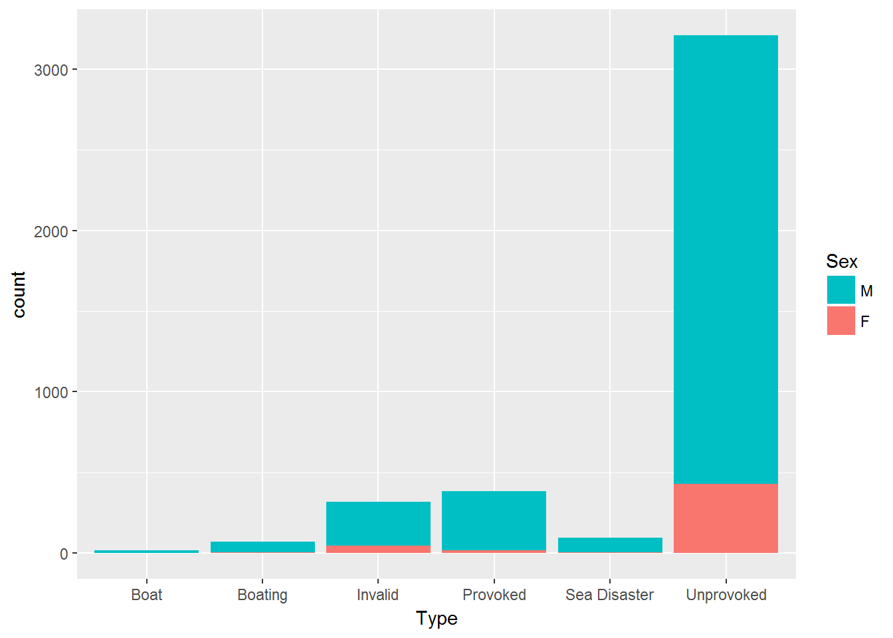
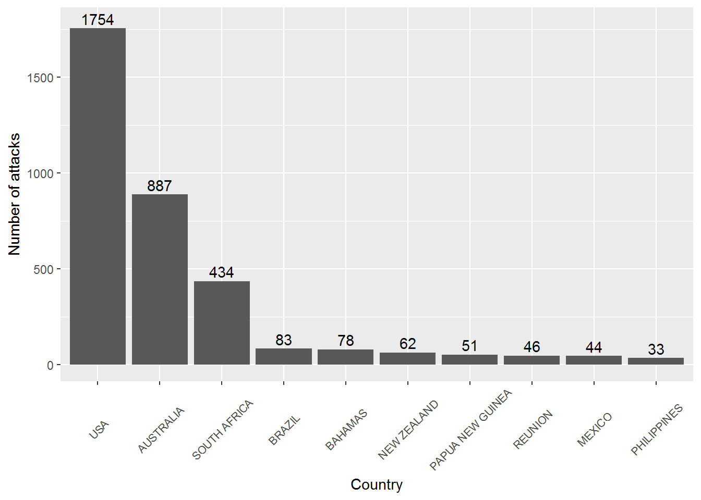

shark_raw <- read.csv("https://raw.githubusercontent.com/JoshuaSturm/CUNY_MSDA/Public/Fall_2017/DATA_607/Project%202/GSAF5.csv", na.strings=" ", stringsAsFactors = F)
# add libraries
options(warn=-1)
library(tidyr)
library(ggplot2)
suppressPackageStartupMessages(library(googleVis, warn.conflicts = F))## Creating a generic function for 'toJSON' from package 'jsonlite' in package 'googleVis'library(dplyr, warn.conflicts = F)
options(gvis.plot.tag = "chart")# Remove duplicate column 'year', break up the date column, remove irrelevant columns, and filter weird values
shark <- shark_raw %>%
data.frame() %>%
select(-1, -3, -(16:24)) %>%
separate(Date, into = c("Day", "Month", "Year"), sep = "-")
shark <- subset(shark, Sex %in% c("M", "F"))
shark <- subset(shark, Type %in% c("Boat", "Boating", "Invalid", "Provoked", "Sea Disaster", "Unprovoked"))
# Remove all fully N/A or blank rows
shark <- shark[!apply(is.na(shark) | shark == "", 1, all),]
# These next 2 loops will check the first two columns for a regex match. If day isn't a digit, move it over to month. Likewise with month to year.
for (i in 1:(length(shark$Day)))
{
pat <- "\\D+"
if (grepl(pat, shark[i,"Day"]) == 1)
{
shark[i,"Month"] <- shark[i,"Day"]
shark[i,"Day"] <- "NA"
}
}
for (i in 1:(length(shark$Month)))
{
pat <- "\\d+"
if (grepl(pat, shark[i,"Month"]) == 1)
{
shark[i,"Year"] <- shark[i,"Month"]
shark[i,"Month"] <- "NA"
}
}The data is clean enough to perform some analysis on.
# Filter only 4-digit values in the year column, and only pick years > 1900
shark <- shark[grepl("^\\d{4}$", shark$Year),]
shark <- shark[shark$Year > 1900,]
ggplot(shark, aes(Year, fill = Sex), order = T) + geom_bar(position = position_stack(reverse = TRUE)) + guides(fill = guide_legend(reverse = T)) + theme(axis.text.x = element_text(angle=90, vjust=0.5, size=5))
ggplot(shark, aes(Type, fill = Sex), order = T) + geom_bar(position = position_stack(reverse = TRUE)) + guides(fill = guide_legend(reverse = T))
byCountry <- shark %>%
group_by(Country) %>%
tally() %>%
top_n(10)## Selecting by nggplot(byCountry, aes(x = reorder(Country, -n), y = n)) +
geom_bar(stat="identity") +
xlab("Country") +
ylab("Number of attacks") +
theme(axis.text.x = element_text(angle=45, vjust=0.5, size=8)) +
geom_text(
aes(label = n, y = n + 20),
position = position_dodge(0.9),
vjust = 0
)
countryList <- shark_raw %>%
group_by(Country) %>%
tally() %>%
distinct()
# Rename / remove columns and duplicates
countryList[201,1] <- "US"
countryList[207:208,1] <- "YEMEN"
countryList[c(2,148),1] <- "PHILIPPINES"
countryList[7:8,1] <- "ANDAMAN ISLANDS"
countryList[36:37,1] <- "CEYLON"
countryList[54:56,1] <- "EGYPT"
countryList[62:63,1] <- "FIJI"
countryList[83:84,1] <- "INDIAN OCEAN"
countryList[86:87,1] <- "IRAN"
countryList[91:92,1] <- "ITALY"
countryList[113:114,1] <- "MEXICO"
countryList[128:129,1] <- "NICARAGUA"
countryList[131:132,1] <- "NORTH ATLANTIC OCEAN"
countryList[140:141,1] <- "PACIFIC OCEAN"
countryList[152:153,1] <- "RED SEA"
countryList[161:162,1] <- "SEYCHELLES"
countryList[163:165,1] <- "SIERRA LEONE"
countryList[168:169,1] <- "SOLOMON ISLANDS"
countryList[180:181,1] <- "ST. MARTIN"
countryList[182:183,1] <- "SUDAN"
countryList[197:198,1] <- "UNITED ARAB EMIRATES"
countryList[c(156,206),1] <- "SAMOA"
# Remove the (blank) first row, and combine duplicates
countryList <- countryList[-1,]
countryList <- aggregate(. ~ Country, data = countryList, sum)
# Use the 'googleVis' package to create a choropleth map based on number of attacks
Geo = gvisGeoChart(countryList, locationvar="Country",
colorvar="n",
options=list(width=600, height=400, projection="kavrayskiy-vii"))
print(Geo, 'chart')